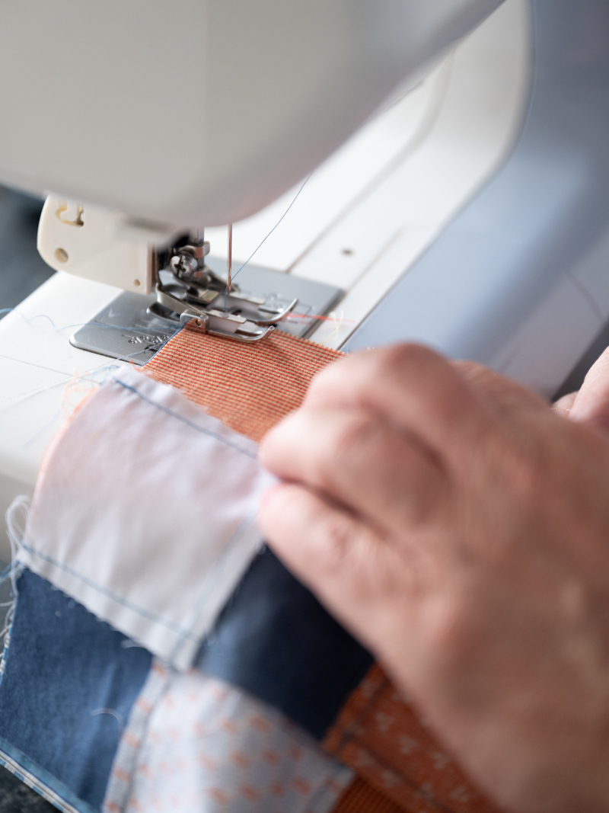
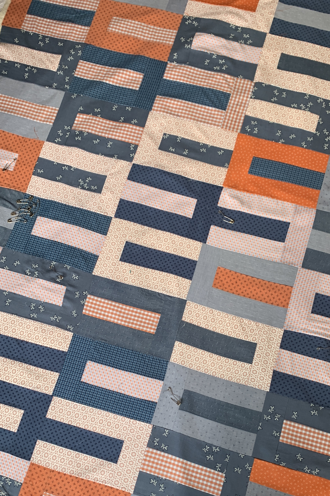
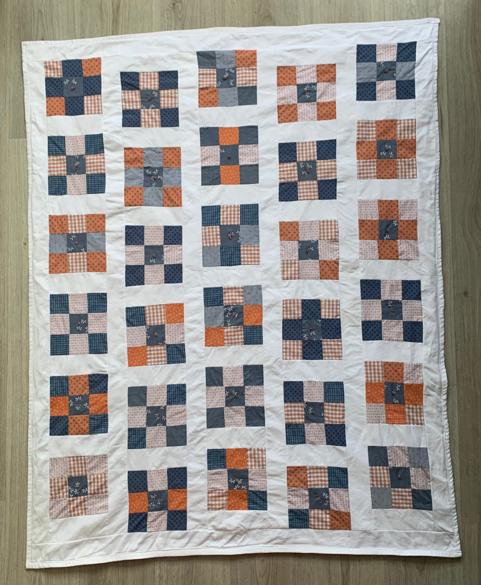
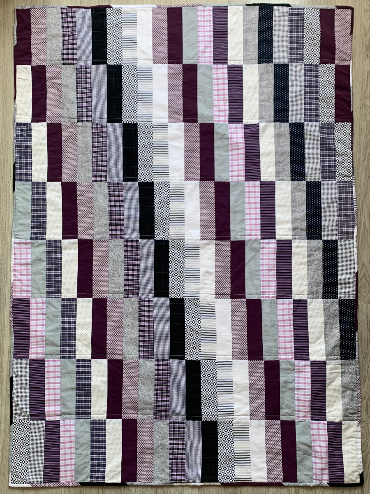
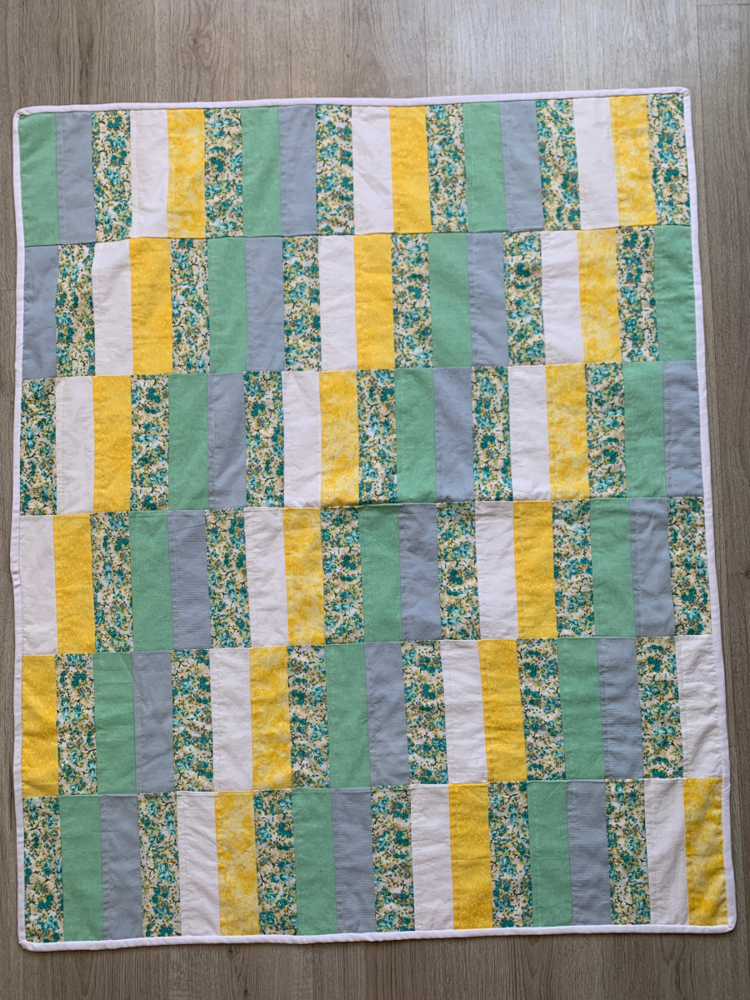
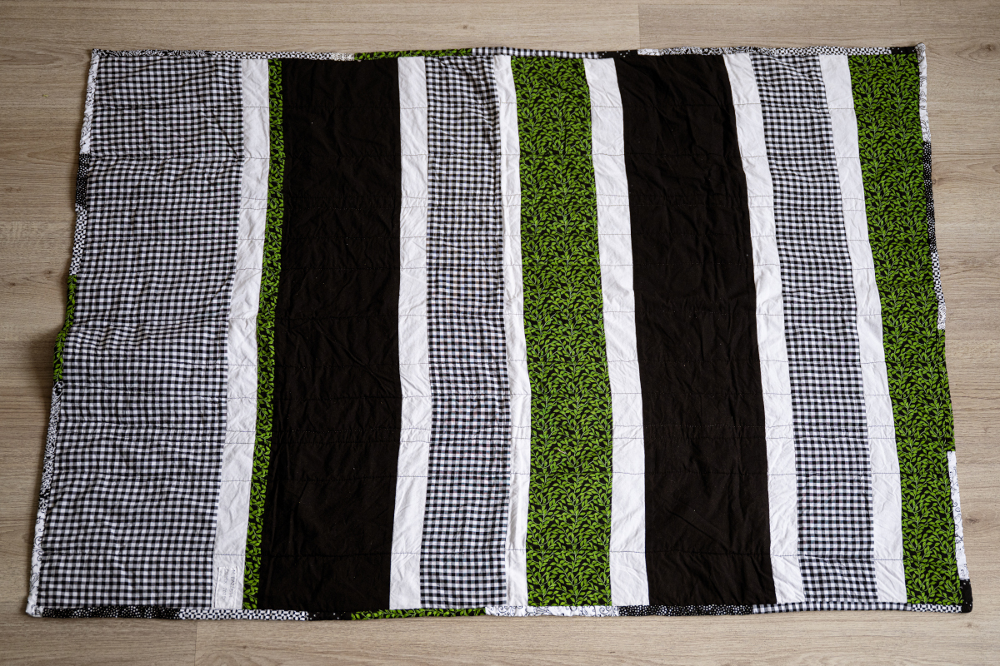
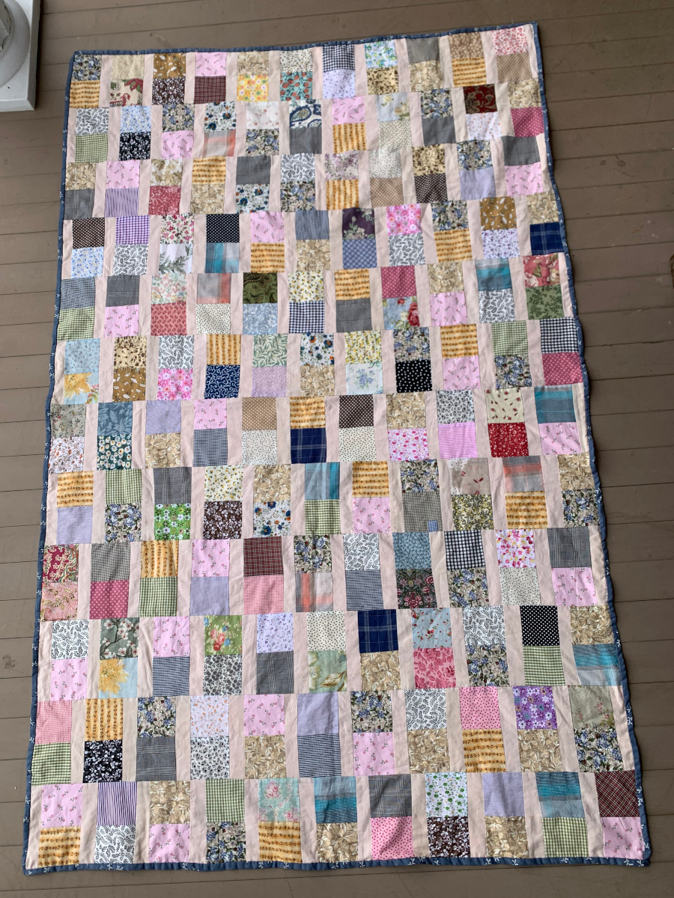
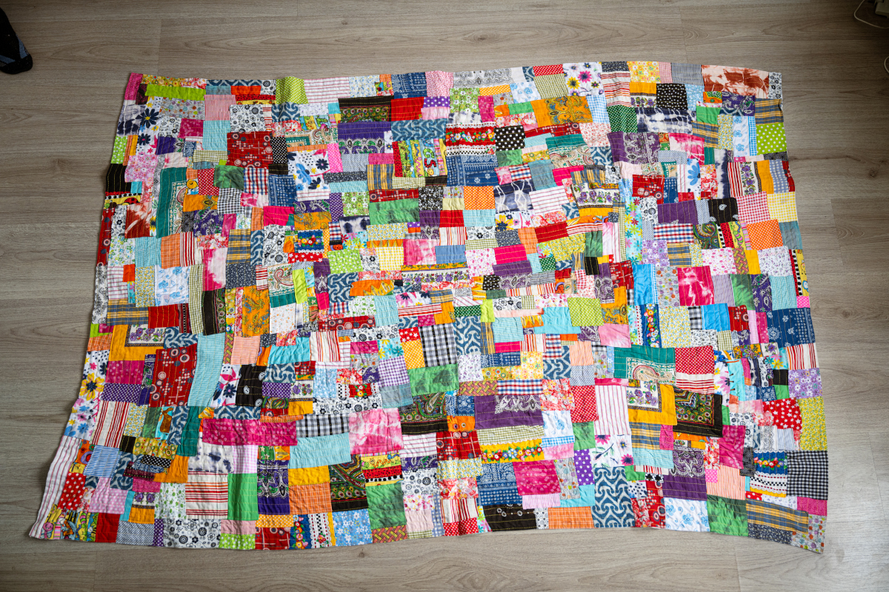
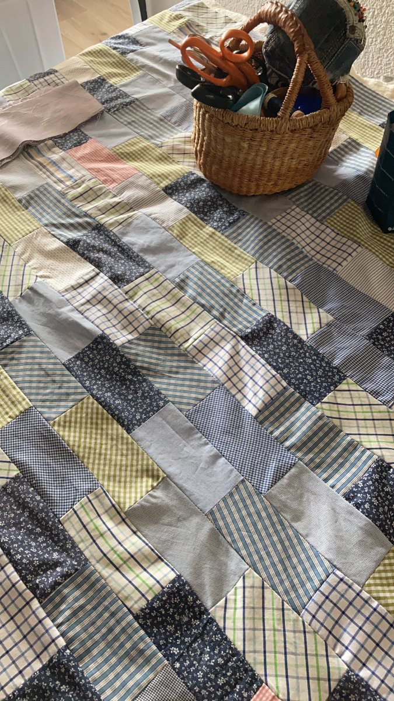
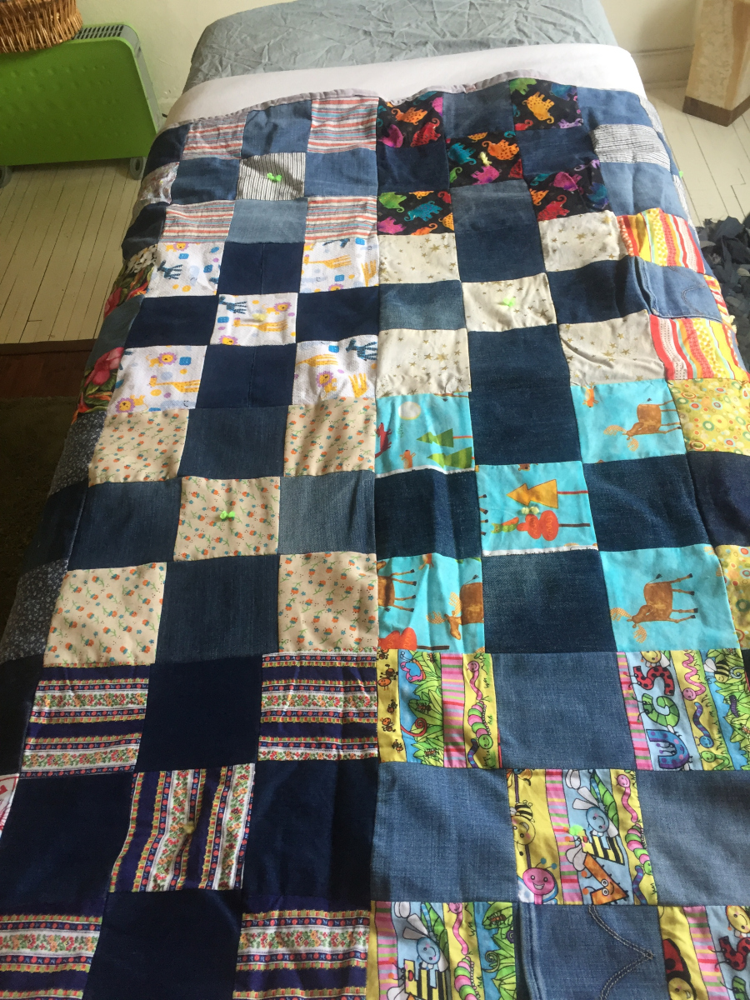

The Process
Approaching the Custom Quilt
Mark approaches each custom quilt as a collaborative dialogue. Before a single cut is made, the process begins with understanding the space it will inhabit and the meaning it will carry.
Whether piecing together cherished memory garments or selecting a specific palette to bring warmth to a room, the focus remains on careful craftsmanship and thoughtful design. Every stitch is an investment in creating an heirloom meant to be lived with, touched, and passed down.
Our Quilts
A Collection of Work
Explore recent pieces, ranging from custom bed quilts to delicate memory works.

Pac-Man Quilt

Anything-Goes Baby Quilt

Sliding Scale

Garden Path

Modern Stripes

Stitched in Her Memory

PRIDE Quilt

Baby First Steps
